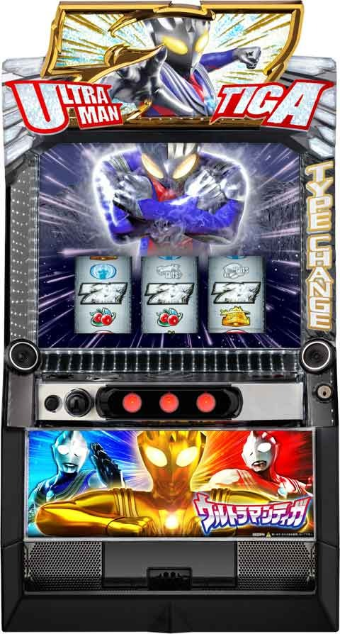

Lウルトラマンティガ

天井情報
[天井情報]
TC ＝ティガチャンス
UBM ＝ウルトラバトルモード
※液晶右下にG数表示。
上がTC間、下がUBM間。
1280G+α UBM当選
リセット時 896G+α UBM当選
TC天井 600G+α TC当選
スルー天井 TC7スルー8回目UBM当選
[リセット判別]
不明
[有利区間について]
エンディング到達で「邪神降臨」に突入敗北するまで約80%でウルトラボーナスがループ
狙い目
UBMがデータ機に上がらないため、実践値からの期待値表が出てこない可能性あります。
狙い目は解析値と予測値からの狙い目です。
[リセット狙い]
UBM間 500Gから(TC間0Gから想定)
[UBM間天井狙い]
850Gから(TC間0Gから想定)
※TC間を考慮してボーダー調整？
[TC間天井狙い]
400Gから(UBM間狙えない想定)
※UBM間を考慮してボーダー調整？
[REG連続天井狙い]
REGが3回続くと次回UBMはエクストラになりBIG確定。
REG3連続 0Gから
履歴で13G以内のREGの信号はREG、20G以降はTCとみなす。
[TCスルー天井狙い]
積極派 5スルーから
慎重派 6スルーから
[メーター狙い]
UBM終了後1回目 9ptから
※1回目は必ずパワータイプ
※2回目以降単体で狙えるか不明
[有利区間切れ狙い]
不明
やめ時
UBM終了後やめ
TC後はスルー回数やUBM間天井を確認してやめ
その他
履歴
UBM間127ハマリ
{kind=link}
UBMのTCスルー
{kind=link}
参考元
基本情報
- メーカー: OK!!
- 機械割: 97.5% 〜 113.6%
- 導入開始日: 2024年05月07日（火）
- ゲーム性概要: 通常時はレア役で「ティガチャンス」を抽選していて、「ティガチャンス」契機で当選するCZ「ウルトラバトルモード」からATを目指すゲーム性だ。出玉増加のメインとなる「ウルトラボーナス」は純増約2.5枚の差枚数管理型AT。必ず特化ゾーンの「タイプチェンジインパクト」から始まり、平均425枚を上乗せする。AT中はレア役で直乗せや特化ゾーンを抽選していて、AT1回あたりの期待獲得枚数は約777枚と強力。また、AT後は必ず「ウルトラバトルモード」へ復帰するのでループの可能性もあり。エンディング到達後は勝利期待度約80%かつ、勝利＝ウルトラボーナス確定の「邪神降臨」へ突入する。


打ち方
打ち方・小役
打ち方（小役狙い）
「最初に狙う絵柄」

左リール枠上〜上段にBARを狙う。
「下段チェリー停止時」
成立役…弱チェリー／強チェリー

「上段チェリー停止時」
成立役…強チェリー

「下段BAR停止時」
成立役…ハズレ／リプレイ／小Vベル／弱チャンス目／強チャンス目

「スイカ停止時」
成立役…スイカ／強チャンス目

中リールにスイカを狙う（ピンクBAR目安）。右リールはこぼしがないのでフリー打ちでOKだ。
「レア役の停止形」

変則押しはNG

通常時、押し順ナビなし時は左リール第1停止での消化を推奨する。
解析情報通常時
小役関連
小役確率
| 役 | 確率 |
|---|---|
| 押し順ベル | 1/1.76 |
| 3枚ベル | 1/7.8（設定1） |
| リプレイ | 1/9.9 |
| 小Vベル | 1/8.6 |
| 弱チェリー | 1/99.9 |
| スイカ | 1/99.9 |
| 弱チャンス目 | 1/99.9 |
| 強チェリー | 1/298.0 |
| 強チャンス目 | 1/298.0 |
ティガチャンス当選率 通常中
| 設定 | 弱レア役 | 強レア役 |
|---|---|---|
| 1 | 1.20% | 36.3% |
| 2 | 調査中 | 調査中 |
| 3 | 調査中 | 調査中 |
| 4 | 調査中 | 調査中 |
| 5 | 調査中 | 調査中 |
| 6 | 調査中 | 調査中 |
高確中
| 設定 | 弱レア役 | 強レア役 |
|---|---|---|
| 1 | 11.7% | 68.8% |
| 2 | 調査中 | 調査中 |
| 3 | 調査中 | 調査中 |
| 4 | 調査中 | 調査中 |
| 5 | 調査中 | 調査中 |
| 6 | 調査中 | 調査中 |
内部状態関連
内部状態概要
通常時の内部状態は通常と高確の2種類で、滞在状態によってティガチャンスの当選率が変化。高確移行契機はおもに弱レア役とティガチャンス終了時で、高確ゲーム数には20G・30G・50Gの振り分けが存在する。
内部状態概要
| 項目 | 示唆 |
|---|---|
| 種類 | 通常＜高確 |
| 変化する要素 | レア役成立時のティガチャンス当選率 |
| 高確移行契機 | 弱レア役成立時の抽選 |
| 高確移行契機 | ティガチャンス終了時の約50% （ウルトラバトルモード非当選に抽選） |
高確移行率
| 契機 | 移行率 |
|---|---|
| 下記以外 | 0.4% |
| 弱レア役 | 33.6% |
| ティガチャンス終了後（※） | 50.0% |
※高確中は高確を維持
タイプチェンジゾーン
タイプチェンジゾーン概要

小Vベル成立時に、リール左下のメーターにポイントを獲得。 12pt貯まるとタイプチェンジ が発生し、 10Gのレア役高確（リプレイをチェリーに変換） へ突入する。スカイタイプとパワータイプの2種類のゾーンがあり、パワータイプならリプレイ成立＝強チェリー変換確定だ。
タイプチェンジゾーン性能
| 項目 | 内容 |
|---|---|
| 突入契機 | 小Vベルが最大12回成立（12pt獲得） |
| 突入確率 | 1/105.2 |
| 継続ゲーム数 | 10G |
| 恩恵 | リプレイをチェリーに変換 |
| 恩恵 | スカイ…弱チェリー：強チェリー＝1：1 パワー…強チェリー確定 |
| 備考 | スカイとパワーの出現比率は1：1 |
| 備考 | ボーナス後1回目は必ずパワーが出現 |
| 備考 | 設定変更時はランダムにポイントを獲得 |
［メーター］

基本は青（スカイ）と赤（パワー）が6個ずつ表示されているが、ボーナス後はすべて赤になる（メーターMAXでパワーが出現）。
「リプレイをチェリーに変換」


リプレイ成立後、擬似遊技でチェリーに変化する。
天井
天井ゲーム数振り分け
ウルトラバトルモード終了時は、天井が256G＋αや896G＋αに短縮される可能性あり。高設定ほど短縮されやすい。
ティガチャンス回数天井
ウルトラバトルモード非当選のティガチャンス3回目・6回目は設定に応じてティガチャンス＋への昇格が抽選される（3回目・6回目の抽選値は同じ）。
ティガチャンスの回数別・ティガチャンス＋当選率
| 設定 | 3回目 | 6回目 | 8回目 |
|---|---|---|---|
| 1 | 10.16% | 10.16% | 100% |
| 2 | 12.11% | 12.11% | 100% |
| 4 | 16.02% | 16.02% | 100% |
| 5 | 17.97% | 17.97% | 100% |
| 6 | 19.92% | 19.92% | 100% |
解析情報ボーナス時
ティガチャンス
ティガチャンス概要

初当りのメインとなる擬似ボーナスで、約40枚獲得で終了。消化中の成立役に応じてウルトラバトルモードを抽選する。
ティガチャンス性能
| 項目 | 内容 |
|---|---|
| 当選契機 | レア役での抽選、天井到達 |
| 獲得枚数 | 約40枚 |
| 消化中の抽選 | レア役でウルトラバトルモードを抽選 |
| ウルトラバトルモード期待度 | 約42% |
| その他 | オールベルならウルトラバトルモード濃厚 |
ティガチャンス確率
| 設定 | 確率 |
|---|---|
| 1 | 1/159 |
| 2 | 1/155 |
| 4 | 1/142 |
| 5 | 1/133 |
| 6 | 1/124 |
「告知タイプ選択」

チャンス告知・完全告知・後告知の3種類から選択可能。
「ティガチャンス＋」

ウルトラバトルモード濃厚の特殊なティガチャンス。消化中はレア役や白7揃いでウルトラボーナスへの昇格が抽選される。
ウルトラバトルモード当選率
| 役 | 当選率 |
|---|---|
| リプレイ | 8.45% |
| 弱レア役 | 30.47% |
| 強レア役 | 100% |
ウルトラバトルモード＆邪神降臨
ウルトラバトルモード概要

ボーナス当選のメイン契機となるバトル型のCZで、成立役に応じた抽選で敵怪獣を撃破すればボーナス確定。 ボーナス終了後は必ずウルトラバトルモードへ突入 （エンディング到達後は邪神降臨）する。 勝利抽選のメインとなるのは小Vベル・リプレイ・レア役で、レア役は怪獣不問でチャンス。小Vベルとリプレイは対戦する怪獣によって期待度が変化する。 キリエロイドⅡは勝利でウルトラボーナス確定の特殊な怪獣。必ずキリエロイドⅡが登場するウルトラバトルモードエクストラも存在する。
ウルトラバトルモード性能
| 項目 | 内容 |
|---|---|
| 突入契機 | ティガチャンス中の抽選、天井到達、 ボーナス終了後（※） |
| 継続ゲーム数 | 10＋2G |
| 消化中の抽選 | 小Vベル・リプレイ・レア役で勝利を抽選 |
| 勝利期待度 | 約50% |
※ウルトラボーナス、レギュラーボーナス終了後（エンディング後除く）
怪獣の種類と期待度の高い役
| 怪獣 | 内容 |
|---|---|
| ゴルザ | 小Vベルがチャンス |
| ガゾートⅡ | リプレイがチャンス |
| キリエロイドⅡ | 小Vベルとリプレイのどちらかがチャンス |
邪神降臨概要


エンディング到達後に突入するウルトラバトルモードの上位版。勝利期待度が約80%と高いだけでなく、勝利時は必ずウルトラボーナスに当選する。基本的な抽選内容はウルトラバトルモードと共通で、小Vベル・リプレイ・レア役がチャンスだ。
邪神降臨性能
| 項目 | 内容 |
|---|---|
| 突入契機 | エンディング到達後 |
| 継続ゲーム数 | 7G |
| 消化中の抽選 | 小Vベル・リプレイ・レア役で勝利を抽選 |
| 勝利期待度 | 約80% |
「フリーズ発生で勝利確定」

レバーON時にあおり発生でチャンス。ガタノゾーアのオーラが赤かったり、あおりの時間が長いと期待度がアップする。最終的にフリーズ発生で勝利確定だ。
［ウルトラバトルモード］AT当選率 ゴルザ
| 役 | 最終ゲーム以外 | 最終ゲーム |
|---|---|---|
| 下記以外 | ー | 4.69% |
| リプレイ | 10.16% | 10.16% |
| 小Vベル | 20.31% | 20.31% |
| 弱レア役 | 25.00% | 50.00% |
| 強レア役 | 100% | 100% |
ガゾートⅡ
| 役 | 最終ゲーム以外 | 最終ゲーム |
|---|---|---|
| 下記以外 | ー | 4.69% |
| リプレイ | 20.31% | 20.31% |
| 小Vベル | 10.16% | 10.16% |
| 弱レア役 | 30.86% | 50.00% |
| 強レア役 | 100% | 100% |
※キリエロイドⅡはゴルザとガゾートⅡのどちらかの数値で抽選
［邪神降臨］AT当選率
| 役 | 最終ゲーム以外 | 最終ゲーム |
|---|---|---|
| 下記以外 | ー | 20.31% |
| リプレイ | 50.00% | 100% |
| 小Vベル | 50.00% | 100% |
| 弱レア役 | 100% | 100% |
| 強レア役 | 100% | 100% |
レギュラーボーナス
レギュラーボーナス概要

約40枚を獲得できる擬似ボーナス。消化中はレア役でウルトラボーナスへの昇格を抽選、白7揃いはウルトラボーナス確定だ。
レギュラーボーナス性能
| 項目 | 内容 |
|---|---|
| 突入契機 | ウルトラバトルモード勝利 |
| 獲得枚数 | 約40枚 |
| 消化中の抽選 | レア役でウルトラボーナス昇格を抽選 |
| 消化中の抽選 | 白7揃いはウルトラボーナス確定 |
| 終了後 | ウルトラバトルモードへ |
［シャッター演出］

シャッターが閉まればウルトラボーナス昇格。終了画面でデカPUSH出現など、昇格パターンは複数存在する。
レギュラーボーナス回数天井
3回連続でレギュラーボーナスに当選 した場合、次に突入するウルトラバトルモードがウルトラバトルモードエクストラ（対戦相手がキリエロイドⅡかつ、勝利でウルトラボーナス確定）に変化する。 天井回数は通常時を挟んでもリセットされないので、レギュラーボーナスが連続した場合は次のウルトラバトルモードまで打つことをオススメしたい。
［天井回数示唆ランプ］

レギュラーボーナス終了時に、リール左のカウンターにポイントを蓄積。3つ貯まると天井到達となり、ウルトラバトルモードエクストラが確定する。
ウルトラボーナス昇格率
| 役 | 昇格率 |
|---|---|
| 弱レア役 | 0.39% |
| 強レア役 | 10.16% |
ウルトラボーナス
ウルトラボーナス概要

差枚数管理型のATで、初期枚数はタイプチェンジインパクトで決定。消化中のレア役で枚数上乗せや特化ゾーンが抽選される。
ウルトラボーナス性能
| 項目 | 内容 |
|---|---|
| 突入契機 | ウルトラバトルモードor邪神降臨勝利 レギュラーボーナス中の昇格 |
| 初期枚数 | タイプチェンジインパクトで決定 |
| 1Gあたりの純増 | 約2.5枚 |
| 消化中の抽選 | 内部状態昇格、枚数上乗せ、特化ゾーン |
| 期待獲得枚数 | 約777枚 |
| 枚数消化後 | カラータイマーモードで引き戻し抽選 |
| 終了後 | ウルトラバトルモードへ （エンディング到達後は邪神降臨） |
高確＆超高確
ウルトラボーナス中は3種類の内部状態があり、滞在状態によって上乗せや特化ゾーン当選率が変化。内部状態の昇格はおもに弱レア役で抽選される。
ウルトラボーナス中の内部状態
| 項目 | 内容 |
|---|---|
| 通常 | 基本となる状態。弱レア役で状態昇格を抽選 |
| 高確 | 上乗せ当選期待度がアップ |
| 超高確 | 上乗せ・特化ゾーン当選期待度がアップ |
| 備考 | 高確ゲーム数は20・30・50Gの振り分けアリ |
| 備考 | 超高確は20Gのみ |
高確・超高確移行率
| 役 | 通常→高確 | 高確→超高確 |
|---|---|---|
| 下記以外 | 0.4% | 0.4% |
| 弱レア役 | 33.6% | 15.2% |
上乗せ・特化ゾーン当選率 通常滞在時
| 役 | 上乗せorティガチャージ | ティガゾーン |
|---|---|---|
| 弱レア役 | 25.00% | ー |
| 強レア役 | 30.47% | 12.98% |
高確滞在時
| 役 | 上乗せorティガチャージ | ティガゾーン |
|---|---|---|
| 弱レア役 | 45.31% | ー |
| 強レア役 | 60.94% | 25.32% |
超高確滞在時
| 役 | 上乗せorティガチャージ | ティガゾーン |
|---|---|---|
| 弱レア役 | 100% | ー |
| 強レア役 | 100% | 56.29% |
※強レア役は上乗せor特化ゾーン＋ティガゾーンのダブル当選の可能性あり
［通常滞在時］上乗せ当選率詳細
| 上乗せ | 弱レア役 | 強レア役 | |
|---|---|---|---|
| 非当選 | 75.00% | 69.53% | |
| ＋10G | 14.06% | ー | |
| ＋20G | 6.25% | ー | |
| ＋30G | 4.30% | ー | |
| ＋50G | 0.39% | 22.01% | |
| ＋100G | ー | 2.29% | |
| ＋200G | ー | 0.46% | |
| ＋300G | ー | 0.06% | |
| ティガチャージのみ | ー | 4.09% | |
| ＋10G | ＋ティガ チャージ | ー | ー |
| ＋20G | ＋ティガ チャージ | ー | ー |
| ＋30G | ＋ティガ チャージ | ー | ー |
| ＋50G | ＋ティガ チャージ | ー | 1.30% |
| ＋100G | ＋ティガ チャージ | ー | 0.22% |
| ＋200G | ＋ティガ チャージ | ー | 0.03% |
| ＋300G | ＋ティガ チャージ | ー | ー |
［高確滞在時］上乗せ当選率詳細
| 上乗せ | 弱レア役 | 強レア役 | |
|---|---|---|---|
| 非当選 | 54.69% | 39.06% | |
| ＋10G | 23.44% | ー | |
| ＋20G | 12.50% | ー | |
| ＋30G | 8.59% | ー | |
| ＋50G | 0.78% | 39.58% | |
| ＋100G | ー | 4.11% | |
| ＋200G | ー | 0.83% | |
| ＋300G | ー | 0.11% | |
| ティガチャージのみ | ー | 12.69% | |
| ＋10G | ＋ティガ チャージ | ー | ー |
| ＋20G | ＋ティガ チャージ | ー | ー |
| ＋30G | ＋ティガ チャージ | ー | ー |
| ＋50G | ＋ティガ チャージ | ー | 3.09% |
| ＋100G | ＋ティガ チャージ | ー | 0.46% |
| ＋200G | ＋ティガ チャージ | ー | 0.07% |
| ＋300G | ＋ティガ チャージ | ー | ー |
［超高確滞在時］上乗せ当選率詳細
| 上乗せ | 弱レア役 | 強レア役 | |
|---|---|---|---|
| 非当選 | ー | ー | |
| ＋10G | 51.96% | ー | |
| ＋20G | 27.34% | ー | |
| ＋30G | 19.14% | ー | |
| ＋50G | 1.56% | 41.25% | |
| ＋100G | ー | 5.41% | |
| ＋200G | ー | 1.11% | |
| ＋300G | ー | 0.15% | |
| ティガチャージのみ | ー | 41.95% | |
| ＋10G | ＋ティガ チャージ | ー | ー |
| ＋20G | ＋ティガ チャージ | ー | ー |
| ＋30G | ＋ティガ チャージ | ー | ー |
| ＋50G | ＋ティガ チャージ | ー | 9.00% |
| ＋100G | ＋ティガ チャージ | ー | 0.98% |
| ＋200G | ＋ティガ チャージ | ー | 0.14% |
| ＋300G | ＋ティガ チャージ | ー | ー |
カラータイマーモード

ボーナス枚数を消化し終えると、3Gのカラータイマーモードへ突入。レア役や狙え演出成功で特化ゾーン（ティガゾーン or タイプチェンジインパクト）を経由してウルトラボーナスへ復帰する。
カラータイマーモード成功時 ティガゾーンとタイプチェンジインパクトの振り分け
| 役 | ティガゾーン | タイプチェンジインパクト |
|---|---|---|
| 弱レア役 | 100% | ー |
| 強レア役 | 99.61% | 0.39% |
タイプチェンジインパクト
タイプチェンジインパクト概要

ウルトラボーナス開始時は、タイプチェンジインパクトで初期枚数を決定。3G/セットの上乗せ特化ゾーンで、 1セットごとに変化するティガのタイプによって上乗せ期待枚数が変わる 。高確率で発生する3連BARを狙え成功時は、30枚以上の上乗せかつ、タイプに応じた追加上乗せも抽選される。 各セット開始時に、マルチ＜スカイ＜パワー＜グリッターから、抽選でタイプを決定。タイプごとに最低保証枚数と3連BAR停止時の追加上乗せ枚数が変化。もっとも強いグリッターが選択された場合、以降のセットもすべてグリッターとなるので、1セット目でグリッターが選ばれるとかなりアツい。
タイプチェンジインパクト性能
| 項目 | 内容 |
|---|---|
| 突入契機 | ウルトラボーナス開始時 |
| 継続ゲーム数 | 3G×3セット＋1G（リザルト画面） |
| 消化中の抽選 | セット開始時にティガのタイプを抽選 |
| 消化中の抽選 | 3連BARを狙え成功でタイプに応じた枚数獲得 さらに、停止形に応じて追加上乗せを抽選 |
| 消化中の抽選 | リザルト画面でも3連BARが止まる可能性あり |
| 平均獲得枚数 | 約425枚 |
「ティガのタイプ選択」

タイプごとの保証上乗せ枚数
| タイプ | 内容 |
|---|---|
| マルチ | 30枚 |
| スカイ | 50枚 |
| パワー | 70枚 |
| グリッター | 100枚 |
各セット開始時に、マルチ＜スカイ＜パワー＜グリッターから、抽選でタイプを決定。タイプごとに最低保証枚数と3連BAR停止時の追加上乗せ枚数が異なる。
「3連BARを狙え」

3連BAR停止で＋30枚以上。左右リールにもBARを狙い、中段BAR揃いなら約50%で追加上乗せ、T字揃いなら100枚 or 300枚上乗せかつ、追加上乗せも濃厚となる。 カットインの色は青＜赤＜虹の3種類あり、赤なら3連BAR停止濃厚、虹は大量上乗せ濃厚だ。
［中段揃い・T字揃い］

［追加上乗せチャレンジ］

3連BAR停止後にあおりが発生し、最終的に画面が割れればタイプに応じた追加上乗せ確定。チャレンジ発生時の追加上乗せ期待度は約50%だ。
「リザルト画面も上乗せの可能性あり」

最終ゲームはトータル枚数を告知するゲームだが、3連BAR狙えが発生してさらなる上乗せを獲得するパターンもある。
3連BARを狙えトータル確率・期待度
| 項目 | 確率 |
|---|---|
| 狙え合算確率 | 1/2.3 |
| 狙え発生時の期待度 | 約87% |
3連BARを狙え確率詳細
| 停止パターン | 確率 |
|---|---|
| 3連BAR停止 | 1/3.0 |
| 十字揃い | 1/26.8 |
| T字揃い | 1/128.0 |
| フェイク | 1/17.8 |
| リザルト画面 | 約1/22 （十字orT字揃いのみ出現） |
※ティガゾーン中も確率は共通 ※リザルト画面十字・T字揃いは＋300枚確定（追加上乗せはナシ）
タイプごとの追加上乗せ当選時の性能
| 項目 | マルチ | スカイ | パワー | グリッター |
|---|---|---|---|---|
| 枚数 | 30枚 | 5枚 | 100枚 | 300枚 |
| ループ率 | 80.08% | 96.48% | 69.53% | 50.00% |
| 最低保証 | 100枚 | 100枚 | 200枚 | 300枚 |
3連BAR停止後の追加上乗せ当選時は、タイプごとの枚数＆ループ率でループ抽選がおこなわれる。
セットごとのタイプ振り分け
| セット | マルチ | スカイ | パワー | グリッター |
|---|---|---|---|---|
| 1セット目 | 46.10% | 33.20% | 20.31% | 0.39% |
| 2セット目 | 26.57% | 51.17% | 20.70% | 1.56% |
| 3セット目 | 12.50% | 43.75% | 38.28% | 5.47% |
※パワーが選択された次のセットはスカイ以上確定 ※グリッター選択後のセットはすべてグリッター確定 （1セット目がグリッターなら、2・3セット目もグリッターを選択）
3連BAR停止時・上乗せ枚数振り分け グリッター以外
| 枚数 | その他 | 十字揃い | T字揃い |
|---|---|---|---|
| ＋30枚 | 100% | 100% | 50.00% |
| ＋100枚 | ー | ー | 25.00% |
| ＋300枚 | ー | ー | 25.00% |
グリッター
| 枚数 | その他 | 十字揃い | T字揃い |
|---|---|---|---|
| ＋300枚 | 100% | 100% | 100% |
3連BAR停止時・追加上乗せ期待度
| 停止形 | 期待度 |
|---|---|
| その他 | 25.00% |
| 十字揃い | 50.00% |
| T字揃い | 100% |
タイプごとの平均追加上乗せ枚数
| タイプ | 枚数 |
|---|---|
| マルチ | 約158枚 |
| スカイ | 約167枚 |
| パワー | 約311枚 |
| グリッター | 約443枚 |
リザルト画面でリールロックが発生した場合は成功確定（必ず虹の狙えが発生）となり、300枚が上乗せされる（追加上乗せはナシ）。
ティガゾーン
ティガゾーン概要

3G＋1G（リザルト画面）の枚数上乗せ特化ゾーン。ゲームの流れや抽選形式はタイプチェンジインパクトと共通なので、タイプチェンジインパクトを1セットだけやれる特化ゾーンと覚えておけば問題ない。
ティガゾーン性能
| 項目 | 内容 |
|---|---|
| 突入契機 | レア役 |
| 継続ゲーム数 | 3G＋リザルト（1G） |
| 消化中の抽選 | 開始時にティガのタイプを抽選 |
| 消化中の抽選 | 3連BARを狙え成功で、タイプに応じた枚数獲得 さらに、停止形に応じて追加上乗せを抽選 |
| 消化中の抽選 | リザルト画面でも3連BARが止まる可能性あり |
タイプ振り分け
| タイプ | 振り分け |
|---|---|
| マルチ | 37.80% |
| スカイ | 24.10% |
| パワー | 37.90% |
| グリッター | 0.20% |
ティガチャージ
ティガチャージ概要

5G継続の枚数上乗せ特化ゾーンで、毎ゲームの成立役に応じて上乗せを抽選。終了時にティガゾーンやタイプチェンジインパクトへ突入することもある。
ティガチャージ性能
| 項目 | 内容 |
|---|---|
| 突入契機 | レア役 |
| トータル突入確率 | 約1/1419 |
| 継続ゲーム数 | 5G |
| 消化中の抽選 | 成立役に応じて枚数を上乗せ |
| 備考 | 終了時に上位の特化ゾーン突入の可能性あり |
ツラヌキ・有利区間
ツラヌキ条件と恩恵
| 項目 | 内容 |
|---|---|
| 条件 | エンディング到達 |
| 恩恵 | 邪神降臨へ |
エンディング後はループ期待度約80%かつ、勝利時はウルトラボーナス確定となる邪神降臨へ突入。一度邪神降臨に突入すれば、敗北まで邪神降臨がループする。
その他
ボーナス確定画面


確定画面でウルトラボーナス or レギュラーボーナスのいずれかを決定する。
演出情報
通常時
ステージ解説
「都市／GUTS作戦指令室」

基本ステージ。
「超古代遺跡ルルイエ」

高確示唆ステージ。
演出期待度・法則
| 演出 | 期待度 | 内容 |
|---|---|---|
| 買い物演出 | ★×1 | 買うものの量が多いとチャンス |
| 自撮り演出 | ★×1 | いいねが多いほどチャンス |
| トランプ演出 | ★×1 | カードが揃えばチャンス |
| チャンネル切り替え演出 | ★×1 | チャンネルの内容で状態を示唆 |
| 地響き演出 | ★×1 | 大きなシンボルならチャンス |
| GUTSCOM演出 | ★×1 | セリフ色で期待度を示唆 |
| 射撃演出 | ★×1 | 大量のUFOならチャンス |
| 出前演出 | ★×1 | 届くもので状態を示唆 |
| リール枠発光演出 | ★×1 | 強発光は前兆示唆 |
| シンボルルーレット演出 | ★×1 | リール右側に出現 雷エフェクト発生でチャンス |
| 古代文字演出 | ★×2 | 文字が強く光るとチャンス |
| 巨人像演出 | ★×2 | 巨人像を発見すればチャンス |
| タイムカプセル演出 | ★×2 | セリフ色で期待度を示唆 |
| 石盤シャッター演出 | ★×2 | 赤ならレア役以上 金は何かしらに当選濃厚 |
| ユザレルーレット演出 | ★×3 | レア役以上濃厚 レア役否定や赤なら大チャンス |
| タイトルロゴ演出 | ★×4 | レア役濃厚 レア役否定で大チャンス |
| レナ黄昏演出 | ★×4 | レア役濃厚 レア役否定で大チャンス |
| ティガ超光演出 | ★×5 | 何かしらに当選濃厚 |
| タイプチェンジ演出 | ★×5 | 弱演出やバトル敗北時に発生 強パターンへの書き換え演出 |
下パネル消灯時はティガチャンス＋確定 だ。
演出ごとの法則
| 演出 | 内容 | |
|---|---|---|
| 自撮り演出 | 赤 | 本前兆期待度75%以上 |
| GUTSCOM演出 | イルマから通信 | 前兆示唆 |
| GUTSCOM演出 | イルマ赤セリフ | 本前兆期待度85%以上 |
| タイムカプセル演出 | ハズレ | 高確or前兆 |
| 小役ナビ系演出全般 | 白ナビ＋ リプレイorベル | 高確確定 |
| 小役ナビ系演出全般 | 黒ナビ | 前兆中に発生で期待度アップ |
| 小役ナビ系演出全般 | レア役成立時に 怪獣レーダー発生 | 緊急招集モード移行に期待 |
※怪獣レーダー…リール左のレーダー部分
［ユザレルーレット演出］

［タイトルロゴ演出］

［レナ黄昏演出］

［タイプチェンジ演出］

タイプチェンジゾーン系の演出法則
| 演出 | 内容 |
|---|---|
| カウンターのメーターが全部赤 | メーターMAXでパワー移行確定 |
| メーターMAX時の押し合い | パワーが優勢だとパワー移行確定 |
| リプレイ成立時のCNANCEが赤 | 強チェリーへの変換確定 |
| 変換中の3リール目にCHANCE文字 | 強チェリーへの変換確定 |
［メーターMAX時の押し合い］

［リプレイ成立時のCNANCEが赤］

［変換中の3リール目にCHANCE文字］

前兆
緊急招集モード

おもにレア役から突入する前兆ステージ。ステージの色が昇格するほどチャンスとなり、最終的にバトル演出でティガチャンスの当否を告知する。
「ステージ色アップ」

ステージ色別・本前兆期待度
| 色 | 期待度 |
|---|---|
| 白 | 100% |
| 青 | 31.87% |
| 緑 | 50.83% |
| 赤 | 90.63% |
「緊急招集モード＋」

緊急招集モード＋なら、ティガチャンス（ウルトラバトルモード確定）の本前兆が確定する。
「バトル」

連続演出
「ミッション系」

ミッション系演出期待度
| 項目 | 期待度 |
|---|---|
| トータル期待度 | 10.05% |
「バトル系」

バトル系演出期待度
| 敵 | 期待度 |
|---|---|
| メルバ | 52.21% |
| イーヴィルティガ | 52.61% |
| ヤナカーギー | 71.90% |
| キリエロイドⅡ | 96.36% |
チャンスアップパターン
| 項目 | 内容 |
|---|---|
| タイトル色 | 白＜赤 |
| シェイクビジョン演出 | チャンス |
| オペレーターモニター演出 | 白＜赤 |
| タイプチェンジ演出 | スカイ＜パワー |
おもに前兆ステージ経由で発生。バトル勝利でティガチャンスに突入する。
［赤タイトル］

演出法則
| 演出 | 内容 | |
|---|---|---|
| 解析演出 | ハズレでCHANCE停止は 本前兆期待度80%以上 | |
| GUTS ロゴ演出 | 中サイズ | 本前兆期待度約80% |
| GUTS ロゴ演出 | 大サイズ | 本前兆濃厚 |
| GUTS セリフ演出 | イルマorムナカタ | レア役対応 |
| GUTS セリフ演出 | イルマorムナカタ | レア役否定で本前兆確定 |
| 発展時の 変身シーン | 赤背景 | ヤナカーギー以上 |
| 発展時の 変身シーン | 赤背景 | メルバorイーヴィルティガに 発展で勝利濃厚 |
| 発展時の 変身シーン | 等身がリアル | キリエロイドIIとのバトル発展濃厚 |
| 前回負けた怪獣と同じ怪獣に発展 | 勝利濃厚 |
［解析演出］

［GUTSロゴ演出（中サイズ）］

［変身シーンのリアル等身］

ティガチャンス
チャンス告知

狙えカットイン発生時に、逆押しでピンクBARが揃えばウルトラバトルモード確定。カットインの色で期待度が変化する。
狙えカットイン発生時の期待度
| 項目 | 抽選値 | |
|---|---|---|
| 狙えカットイン | 発生確率 | 1/8.5 |
| 狙えカットイン | トータル | 26.0% |
| 狙えカットイン | 赤カットイン | 100% |
| ピンクBARテンパイボイス「これが光なんだ」 | 100% | |
| 中段にピンクBAR停止（狙え発生時） | 100% |
［青カットイン］

［赤カットイン］

完全告知

レバーON時〜第3停止までのいずれかで“痺れる告知”が発生すればウルトラバトルモードとなる完全告知タイプ。
痺れる告知発生タイミング割合
| タイミング | 割合 | |
|---|---|---|
| レバーON時 バイブあり | 第1停止時 | 7.41% |
| レバーON時 バイブあり | 第3停止時 | 6.00% |
| レバーON時 バイブあり | 第3停止後 | 6.59% |
| レバーON時 バイブなし | レバーON時 | 31.20% |
| レバーON時 バイブなし | リール回転開始時 | 7.80% |
| レバーON時 バイブなし | 第1停止時 | 9.64% |
| レバーON時 バイブなし | 第2停止時 | 7.80% |
| レバーON時 バイブなし | 第3停止時 | 15.98% |
| レバーON時 バイブなし | 第3停止後 | 7.56% |
［痺れる告知］

後告知

消化中にパネルを集めていき、最終ゲームのジャッジ演出でウルトラバトルモードの当否を告知する。
ティガチャンス・後告知中の演出
| 演出 | 内容 |
|---|---|
| 開放あおり | デフォルト演出 |
| チャンス開放あおり | オーラ発生でパネル獲得の期待大 |
| キャラセリフ | 白＜青＜赤 |
| ジャッジ | オペレーター＜イルマ＜2人 |
| PUSH色 | 通常＜ビリビリ＜赤炎 |
パネル・マス系の法則
| 項目 | 内容 |
|---|---|
| 紫パネル | 残りティガチャンス2回以内に ウルトラバトルモード当選 |
| 獲得パネルが一直線に揃う （ビンゴ成立） | ウルトラバトルモード濃厚 |
［紫パネル］

［チャンス開放あおり］

［セリフ］

［ジャッジ（2人）］

［PUSHの種類］

演出法則・期待度
| 演出 | 内容 | |
|---|---|---|
| タイトル色 | 白 | デフォルト |
| タイトル色 | 赤 | 回数天井示唆 |
| タイトル色 | ゼブラ柄 | ウルトラバトルモードかつ設定6 （タイトル画面のPUSHで出現） |
| ティガチャンスをオールベルで消化 | ウルトラバトルモード濃厚 | |
| ベルナビ色 | 黄 | デフォルト |
| ベルナビ色 | 黄以外 | ウルトラバトルモード濃厚 |
| 白7を狙え | 中段白7停止 | 白7揃い濃厚（ウルトラボーナス） |
［赤タイトル］

ウルトラバトルモード＆邪神降臨
ティガの攻撃別・勝利期待度
| 攻撃 | 1～10G目 | 11・12G目 | |
|---|---|---|---|
| マルチ | キック | 4.7% | ー |
| マルチ | ハンドスラッシュ | 12.7% | 5.1% |
| マルチ | ゼペリオン光線 | 51.3% | 81.7% |
| マルチ | タイマーフラッシュ スペシャル | 100% | 100% |
| スカイ | 25.0% | 34.5% | |
| パワー | 80.0% | 100% | |
| グリッター | 100% | ー |
タイプチェンジ・勝利期待度
| タイプ | 期待度 |
|---|---|
| スカイ（ランバルト光弾） | チャンス |
| パワー（デラジウム光流） | 大チャンス |
| グリッター | ウルトラバトルボーナス濃厚 |
ティガ攻撃系の演出法則
| 演出 | 内容 |
|---|---|
| 押し合い演出 | 第1停止でティガが押し合いに勝てば勝利 |
| 押し合い演出 | 中央の線が赤ならレア役示唆 レア役否定で勝利濃厚 |
| クリスタル演出 | 赤いクリスタルならレア役示唆 レア役否定で勝利濃厚 |
| 押し合い・ クリスタル共通 | 基本はリール回転開始時に発生するが レバーON時に発生すれば勝利濃厚 |
| 気合溜め演出 | レア役示唆＋勝利期待度50%以上 レア役否定で勝利濃厚 |
| レア役成立時 | スカイ以上のティガの攻撃確定 （期待度25%以上） |
| 3連BARを狙え | 3連BAR停止でボーナス確定 |
| 3連BARを狙え | NEXT TIGA ATTACKが表示された 次ゲームの狙えはボーナス確定 |
| 3連BARを狙え | BAR十字揃いやT字揃いはウルトラボーナス濃厚 |
［押し合い演出：赤］

［クリスタル演出：赤］

「ダイナ／ガイア参戦」

ダイナやガイアの参戦は勝利かつ、ウルトラボーナス確定のプレミアムパターン。
違和感演出一覧
| No. | 内容 |
|---|---|
| 0 | なし（違和感なしでの当選） |
| 1 | 筐体が振動 |
| 2 | 下パネルが消灯 |
| 3 | 下パネルがチカチカと点滅 |
| 4 | 筐体枠のランプが全消灯 |
| 5 | 枠ランプが虹点灯 |
| 6 | 枠ランプが上から下へ流れるように点灯 |
| 7 | 枠ランプが下から上へ流れるように点灯 |
| 8 | リール無効ラインが消灯 |
| 9 | BGMが停止 |
| 10 | リール回転音が無音 |
| 11 | リール回転音が2回発生 |
| 12 | レバーON時にリール回転音が発生 |
| 13 | リール回転音の遅れ |
| 14 | リールが無音で停止 |
| 15 | リール停止音が2回発生 |
| 16 | リール停止音が遅れ |
| 17 | 「Brave Love, TIGA」が流れた |
| 18 | 特殊予告音が鳴った |
| 19 | 特殊ボイス「ティガ1」が発生 |
| 20 | 特殊ボイス「ティガ２」が発生 |
| 21 | 特殊ボイス「ダイゴ」が発生 |
| 22 | 特殊ボイス「玉ちゃん」が発生 |
| 23 | ウーファー音が発生 |
| 24 | P-FLASHが発生 |
| 25 | カウントダウン_パターン1が発生 |
| 26 | カウントダウン_パターン２が発生 |
違和感演出発生で勝利濃厚。
「発生した違和感は確定画面で告知」

ウルトラボーナスのステージ解説
「基本ステージ」

「高確示唆ステージ」

「超高確確定ステージ」

ウルトラボーナス
連続演出期待度
バトル勝利で上乗せ or 特化ゾーン確定。ゼブラ柄タイトルは勝利かつ、上位報酬のチャンス。最終ゲームは3連BARを狙えが発生する可能性があり、停止すれば勝利が確定する。
バトル演出勝利期待度
| 怪獣 | 期待度 |
|---|---|
| ゴルザ | 35.10% |
| ガゾートⅡ | 39.94% |
| キリエロイドⅡ | 71.73% |
| ゴブニュ | 89.70% （勝利で特化ゾーン以上） |
バトル演出中の演出法則
| 演出 | 内容 |
|---|---|
| タイトル | 紫＜赤＜ゼブラ柄 |
| チャンスアップ | 青＜赤 |
| カットイン | 青＜赤 |
| リール枠フラッシュ | レア役示唆、レア役否定で勝利 |
| 下パネル消灯 | ＋100枚以上or特化ゾーン |
| 筐体バイブ | 特化ゾーン |
［ゴブニュ］

［チャンスアップ：赤］

［カットイン：赤］

演出期待度・法則
| 演出 | 期待度 | 内容 | |
|---|---|---|---|
| UFO撃破演出 | ★×1 | 大きなUFO撃破でチャンス | |
| ティガ演舞演出 | ★×1 | 影やエフェクトが赤ならチャンス | |
| ティガ輝き演出 | ★×1 | 第3停止まで続くと発展 | |
| 画面破壊演出 | ★×1 | 爪痕が赤ならチャンス | |
| キャラウィンドウ SU演出（※） | ★×1 | 女性キャラだとチャンス | |
| キャラウィンドウ SU演出（※） | ★×1 | ステップ1…1枚役or共通ベル | |
| キャラウィンドウ SU演出（※） | ★×1 | ステップ2…リプレイ | |
| キャラウィンドウ SU演出（※） | ★×1 | ステップ3…レア役 | |
| キャラウィンドウ SU演出（※） | ★×1 | ステップ4…強レア役 | |
| キャラウィンドウ SU演出（※） | ★×1 | ステップ5…強レア役かつ上乗せ | |
| キャラカットインSU演出 | ★×2 | クリスタルが赤ならチャンス | |
| タイプチェンジ 演出 | マルチ | ★×2 | オーラが大きいとチャンス |
| タイプチェンジ 演出 | スカイ | ★×3 | レア役対応、矛盾で前兆示唆 |
| タイプチェンジ 演出 | パワー | ★×4 | 強レア役対応、矛盾で前兆期待大 |
| 狙え演出 | ★×3 | ピンクBAR揃いで特化ゾーン | |
| 狙え演出 | ★×3 | デフォルト＜赤＜虹 |
※ステップ2以下でもレア役の可能性あり
演出ごとの法則
| 演出 | 法則＆示唆 | |
|---|---|---|
| レア役 ナビ系 | ！ | レア役示唆、否定で特化ゾーン |
| レア役 ナビ系 | !!! | 強レア役＋上乗せ対応 否定で特化ゾーン |
| レア役 ナビ系 | セブラ柄!!! | 特化ゾーン |
| レア役 ナビ系 | ULTRA | 特化ゾーン定 |
| 押し順 ナビ系 | 白 | 前兆・高確示唆 |
| 押し順 ナビ系 | 黒 | 特化ゾーン |
| 押し順 ナビ系 | 紫 | ＋100枚以上or特化ゾーン |
| 押し順 ナビ系 | ゼブラ | ＋100枚以上or特化ゾーン |
| 押し順 ナビ系 | 虹ナビ | タイプチェンジインパクト |
| UFO撃破 演出 | ベル以外 | 高確以上 |
| UFO撃破 演出 | 大きいUFO | レア役否定で特化ゾーン |
| ティガ演舞 演出 | 第3停止まで継続 | 高確以上示唆 |
| ティガ演舞 演出 | 赤パターン | レア役否定で ＋100枚以上or特化ゾーン |
| タイプチェンジ 演出（※） | 通常パターン | レア役示唆、否定で高確or前兆 |
| タイプチェンジ 演出（※） | 強パターン | 強レア役以上 否定で＋100枚以上or特化ゾーン |
| ウインドウ SU | SU1 | リプレイなら高確以上 |
| ウインドウ SU | SU2 | 1枚役or共通ベルなら高確以上 |
| ウインドウ SU | SU3 | レア役否定で上乗せor特化ゾーン |
| ウインドウ SU | SU4・5 | 強レア役否定で ＋100枚以上or特化ゾーン |
| ウインドウ SU | SU5 | 強レア役かつ上乗せor特化ゾーン |
| ウインドウ SU | 紫枠（女性） | レア役否定で ＋100枚以上or特化ゾーン |
| キャラ カットイン SU | SU2以上 | 高確以上濃厚 |
| キャラ カットイン SU | 赤パターン | レア役否定で ＋100枚以上or特化ゾーン |
| 次回予告 | ＋100枚以上or特化ゾーン |
※マルチorスカイのタイプチェンジ演出
［ゼブラ柄!!!］

［ULTRA］

［UFO撃破演出：大きいUFO］

［ティガ演舞演出：赤パターン］

［タイプチェンジ演出：スカイ］

［ウインドウSU：紫枠］

［キャラカットインSU］

［次回予告］

特化ゾーン
演出法則・期待度
| 演出 | 法則・期待度 | |
|---|---|---|
| BAR揃い後の ロック中のボイス | レナCU | 追加上乗せ確定 |
| BAR揃い後の ロック中のボイス | ユザレ | 300枚以上の追加上乗せ確定 |
| BARテンパイ時に特殊テンパイ音発生 | 追加上乗せ確定 | |
| 追加上乗せあおり中の 裏ボタン （PUSHボタンの色） | 白 | 追加上乗せ期待度27.3% |
| 追加上乗せあおり中の 裏ボタン （PUSHボタンの色） | 赤 | 追加上乗せ確定 |
| 追加上乗せあおり中の 裏ボタン （PUSHボタンの色） | 虹 | 300枚以上の追加上乗せ確定 |
| 3連BAR停止後のティガの影の色 | 青＜オレンジ＜赤 |
オールグリッター確定パターン
| 演出 | パターン |
|---|---|
| ウルトラボーナス告知画面 | 金7が表示 |
| タイプチェンジインパクト突入画面 | グリッターが出現・タイトル虹 |
演出ごとの獲得枚数示唆
| タイプ／パターン | 示唆 | |
|---|---|---|
| マルチ | ゼペリオン光線 | ＋50枚以上 |
| マルチ | タイマーフラッシュスペシャル | ＋100枚以上 |
| マルチ | 液晶ブラックアウト→ タイマーフラッシュスペシャル | ＋1000枚濃厚 |
| スカイ | 液晶ブラックアウト | ＋300枚以上 |
| パワー | 100の倍数以外からスタート | ＋300枚以上 |
| グリッター | 600枚を超える | ＋900枚以上 |
「マルチ」

PUSHボタンが出現するたびに上乗せ。ティガの攻撃が変化すれば大量上乗せのチャンス！
「スカイ」

ボタン連打で分割上乗せ。
「パワー」

ボタン長押しで上乗せを告知。100枚以上の上乗せが濃厚で、必殺技に変化すれば大量上乗せに期待できる。
「グリッター」

数字が昇格していく最強上乗せ。
「ウルトラボーナス告知画面：金7」

「突入画面：グリッター＆タイトル虹」

「ティガの影の色」

その他
ウルトラボーナス確定パターン
| No. | パターン |
|---|---|
| 1 | 背景・BONUSの文字が金 |
| 2 | 7絵柄にたぬ吉がいる |
| 3 | 7絵柄の背景の石像が金 |
| 4 | レバーと「解き放て！」の文字色が金 |
［背景・文字色金］

［7絵柄にたぬ吉］

［背景の石像が金］

［レバーと「解き放て！」の文字色が金］

ぱちログミッション
| No. | ランク | 内容 |
|---|---|---|
| 1 | C | １回の遊技で遊技数1000G突破 |
| 2 | B | １回の遊技で遊技数3000G突破 |
| 3 | A | １回の遊技で遊技数5000G突破 |
| 4 | S | １回の遊技で遊技数7000G突破 |
| 5 | SS | １回の遊技で遊技数10000G突破 |
| 6 | B | TOTAL遊技数10000G突破 |
| 7 | S | TOTAL遊技数100000G突破 |
| 8 | SSS | TOTAL遊技数1000000G突破 |
| 9 | C | TIGA CHANCE突入 |
| 10 | B | ULTRA BATTLE MODE突入 |
| 11 | A | ULTRA BATTLE MODE邪神降臨突入 |
| 12 | B | ULTRA BONUS突入 |
| 13 | C | REGULAR BONUS突入 |
| 14 | C | 累計ULTRA BONUS突入回数 3回 |
| 15 | B | 累計ULTRA BONUS突入回数 5回 |
| 16 | B | 累計ULTRA BONUS突入回数 10回 |
| 17 | A | 累計ULTRA BONUS突入回数 30回 |
| 18 | S | 累計ULTRA BONUS突入回数 50回 |
| 19 | SS | 累計ULTRA BONUS突入回数 100回 |
| 20 | B | ULTRA BATTLE MODEで勝利 |
| 21 | A | ULTRA BATTLE MODEで3連続勝利 |
| 22 | S | ULTRA BATTLE MODEで5連続勝利 |
| 23 | S | ULTRA BATTLE MODE邪神降臨で勝利 |
| 24 | SS | ULTRA BATTLE MODE 邪神降臨で3連続勝利 |
| 25 | SSS | ULTRA BATTLE MODE 邪神降臨で5連続勝利 |
| 26 | SS | REGULAR BONUS中に ULTRA BONUS昇格 |
| 27 | C | TYPE CHANGE IMPACT突入 |
| 28 | A | TYPE CHANGE IMPACTで TOTAL上乗せ+100枚で終了 |
| 29 | C | TYPE CHANGE IMPACTで TOTAL上乗せ+300枚以上 |
| 30 | B | TYPE CHANGE IMPACTで TOTAL上乗せ+500枚以上 |
| 31 | A | TYPE CHANGE IMPACTで TOTAL上乗せ+1000枚以上 |
| 32 | S | TYPE CHANGE IMPACTで TOTAL上乗せ+1500枚以上 |
| 33 | SS | TYPE CHANGE IMPACTで TOTAL上乗せ+2000枚以上 |
| 34 | S | TYPE CHANGE IMPACTで グリッターゾーンへ昇格 |
| 35 | SS | TYPE CHANGE IMPACTで グリッターゾーンに2回昇格 |
| 36 | SSS | TYPE CHANGE IMPACTで オールグリッターゾーン発生！ |
| 37 | B | マルチチャージ発生 |
| 38 | B | スカイチャージ発生 |
| 39 | B | パワーチャージ発生 |
| 40 | S | グリッターチャージ発生 |
| 41 | A | リザルトタイプチェンジ発生 |
| 42 | C | TIGA ZONE突入 |
| 43 | C | TYPE CHANGE ZONE SKYへ移行 |
| 44 | A | TYPE CHANGE ZONE POWERへ移行 |
| 45 | C | レア役タイプチェンジ（弱チェリー）発生 |
| 46 | B | レア役タイプチェンジ（強チェリー）発生 |
| 47 | SS | エンディング移行 |
| 48 | B | 天井到達 |
| 49 | C | 演出タイプチェンジ発生 |
| 50 | C | BAR揃いで上乗せ発生 |
| 51 | B | BAR十字揃いで上乗せ発生 |
| 52 | A | BART字揃いで上乗せ発生 |